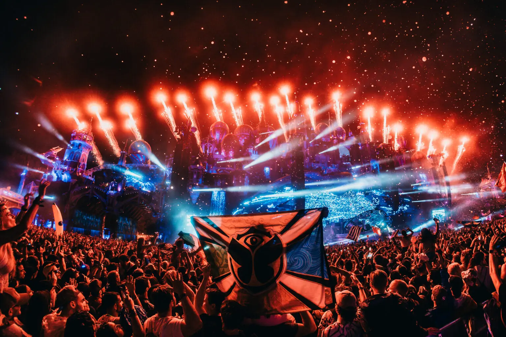
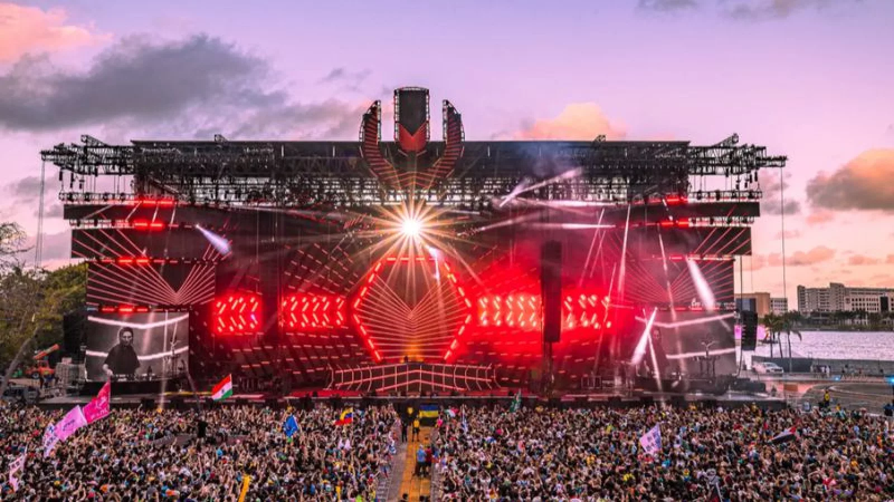

¿QUE ES UN FESTIVAL EDM?
La música electrónica de baile ( EDM ), también conocida como música dance o música de club , es una amplia gama de géneros de música electrónica de percusión creados originalmente para clubes nocturnos , raves y festivales. Generalmente, es producida para su reproducción por DJs que crean selecciones fluidas de pistas, llamadas mezclas de DJ , mediante la transición de una grabación a otra. Los productores de EDM también interpretan su música en vivo en conciertos o festivales, en lo que a veces se denomina un sistema de sonido en vivo. Desde sus inicios, la EDM se ha expandido para incluir una amplia gama de subgéneros.
Eventos como Tomorrowland, Electric Daisy Carnival (EDC) y Ultra Music Festival (UMF) son algunos de los festivales más famosos del mundo.
FESTIVALES MAS FAMOSOS
TOMORROWLAND
Tomorrowland es un festival de música electrónica de baile considerado el más grande del mundo en su estilo, celebrado anualmente en la localidad belga de Boom (Flandes, Bélgica). El festival es organizado por los hermanos Manu Beers y Michiel Beers a través de su empresa We Are One World, y se calcula que anualmente acuden más de 400.000 personas de casi 200 nacionalidades distintas. En 2025 un incendio afectó el escenario principal del Tomorrowland en Bélgica, dos días antes de que iniciara el festival.
ELECTRIC DAISY CARNIVAL (EDC)
Electric Daisy Carnival (EDC) es un festival de música electrónica organizado por la empresa Insomniac Events. El festival abarca géneros como EDM, House, Dance, Electro, drum and bass, Techno, dance-punk, Hard dance, Dubstep, Trance, Trap y mucho más. Los más populares productores y DJs como Andrew Bayer, Armin van Buuren, Yellow Claw y Tiësto se presentan en los lugares donde se realizan festivales de este tipo. Comenzando por Estados Unidos (California, Colorado, Florida, Illinois, Nevada, Nueva Jersey, Nueva York, Texas, Puerto Rico), así como en el extranjero, incluyendo México, Reino Unido, Brasil, India, China, Japón, Corea del Sur, Colombia y Tailandia. Es el festival de música electrónica más grande en América, EDC se denominó la "Ibiza Americana" en 2010. En 2009, EDC se convirtió en un evento de dos días, y en 2011 un evento de tres días en Las Vegas que atrajo a 230.000 personas. En 2015 atrajo a más de 400 000 durante 3 días (135 000 por día).
ULTRA MUSIC FESTIVAL (UMF)
Ultra Music Festival (UMF) es un festival anual de música electrónica, fundado en 1999 por Russell Faibisch y Alex Omes. El festival tiene lugar en marzo en la ciudad de Miami, Florida. El primer evento del festival coincidió con el Winter Music Conference en el año 1999, que también se llevó a cabo en Miami. El festival tuvo lugar entre 1999 y 2000 en South Beach (Miami Beach), entre 2001 y 2005 en Bayfront Park (Downtown Miami), entre 2006 y 2011 en el Bicentennial Park (Downtown Miami), entre 2012 y 2018 se realizó de nuevo en Bayfront Park y en 2019 tuvo lugar en Virgina Key Beach Park, lo que generó descontento entre los asistentes por la lejanía de la zona respecto a la ciudad. Debido a la pandemia provocada por el virus COVID-19, el festival se suspendió los años 2020 y 2021, siendo reanudado en 2022 en Bayfront Park. Ultra lleva a cabo también sus festivales en Santiago de Chile, Sudáfrica, Seúl, Singapur, Split, Shanghái, Bali, Tokio, Asunción, Buenos Aires, Río de Janeiro, Lima, Ciudad de México y España.
COMPRARACION ENTRE FESTIVALES
| Festival | País | Capacidad | Año |
|---|---|---|---|
| Tomorrowland | Bélgica | 400,000 | 2005 |
| EDC Las Vegas | Estados Unidos | 525,000 | 1997 |
| Ultra Music Festival | Estados Unidos | 165,000 | 1999 |
Galería

Tomorrowland

Electric Daisy Carnival

Ultra Music Festival